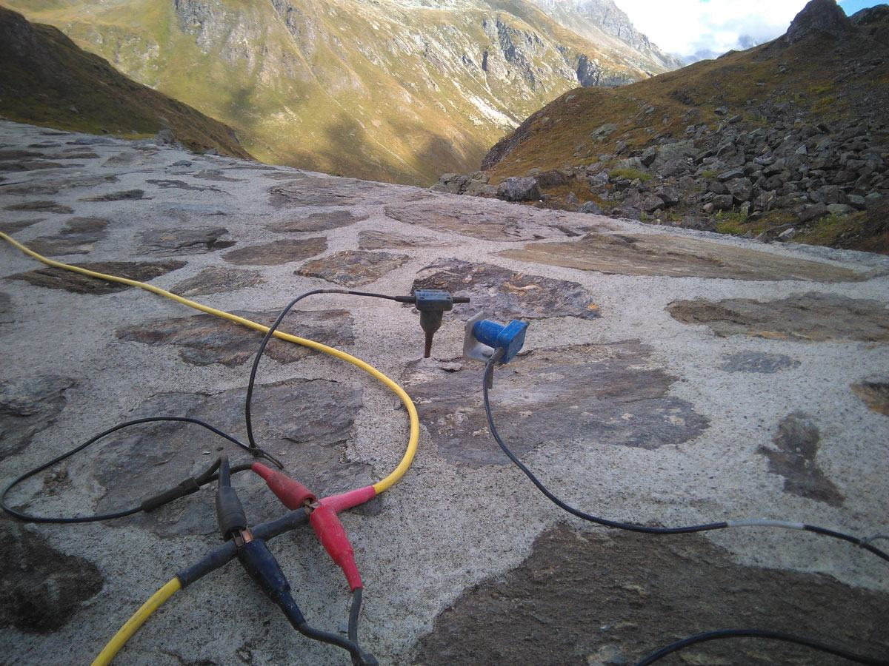

Indagini geofisiche
Misure indirette che ricostruiscono il sottosuolo senza scavarlo: profilo stratigrafico, profondità del substrato roccioso, corpi di frana, cavità, falde, oggetti sepolti e resa dei consolidamenti.
- Sismica 2D e 3D, da superficie e in foro
- Prospezioni sismiche in avanzamento durante lo scavo in galleria
- Tomografia elettrica 2D e 3D, da superficie e in foro
- Georadar con array singoli e multipli
- Elettromagnetometria